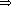
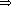

(print 'abc)
(print 'abc) ABC
(print (list 1 2 3))(1 2 3)
(print "A String")"A string"
(print 387.9532)387.9532
(print (make-hash-table))#<HASH-TABLE>
As we saw in Lesson 10,
READ turns characters into Lisp data. So far, you've seen
a printed representation of several kinds of Lisp data:
The Lisp reader does its job according to a classification of characters. The standard classifications are shown below. As we'll see in Lesson 12, you can alter these classifications for your own needs.
Standard Constituent Characters
-------------------------------
a b c d e f g h i j k l m n o p q r s t u v w x y z
A B C D E F G H I J K L M N O P Q R S T U V W X Y Z
0 1 2 3 4 5 6 7 8 9
! $ % & * + - . / : < = > ? @ [ ] ^ _ { } ~
<backspace> <rubout>
Standard Terminating Macro Characters ------------------------------------- " ' ( ) , ; `
Standard Non-Terminating Macro Characters ----------------------------------------- #
Standard Single Escape Characters --------------------------------- \
Standard Multiple Escape Characters ----------------------------------- |
Standard Whitespace Characters ------------------------------ <tab> <space> <page> <newline> <return> <linefeed>
If READ starts with a constituent character, it
begins accumulating a symbol or number. When READ encounters
a terminating macro character or a whitespace character, it tries to
interpret the collected constituent characters first as a number, then as a
symbol. If a numeric interpretation is possible, READ
returns the number. Otherwise, READ changes the alphabetical
characters to a standard case (normally upper case), interns the name as a
symbol, and returns the symbol.
Escape characters play a special role. A single escape character
forces the following character to be treated exactly as a constituent
character. In this way characters that are normally treated as whitespace
or terminating macro characters can be part of a symbol. If
READ encounters an escape character, it never
attempts to interpret the resulting constituents as a number, even if only
digits were escaped.
If READ starts with a macro character, the character
determines the next step:
Finally, some Lisp data is not meant to be read. For example, the
printed representation of a hash table looks something like
#<HASH-TABLE>. It is an error for READ to
attempt to read anything beginning with the characters #<.
The PRINT function changes a Lisp object into the sequence
of characters that READ would need to reconstruct it:
 ABCABC
(1 2 3)
"A string"
387.9532
#<HASH-TABLE>
PRINT always begins its output with a newline character
(), and follows its
output with a space ( ).
This ensures that the
).
This ensures that the PRINT output stands apart from any
surrounding output, since newline and space are both treated as whitespace,
and cannot be part of the printed representation of a Lisp object (unless
escaped).
Other variations of PRINT have different uses.
PRIN1 behaves as PRINT, but does not surround
its output with whitespace. This might be useful if you are building up a
name from successive pieces, for example. PRINC behaves as
PRIN1, but generates output intended for display, rather than
READ; for example, PRINC omits the quotes around
a string, and does not print escape characters.
|A BC|
|A BC|
A BC
Normally, READ reads from the keyboard and PRINT
prints to the screen. Both of these functions take an optional argument;
the argument specifies an input stream for READ, and an output
stream for PRINT. What's a stream? A stream is a source or
sink of data, typically -- but not necessarily -- characters. For now,
we'll look at how text files can be the source or sink of a character
stream. In Chapter 19 we'll look at some of
the other possibilities.
You can attach a stream to a file using the OPEN function,
which takes as parameters a file name and a keyword argument to specify
the direction (input or output) of the stream. To finish operations on the
stream and close the associated file, use the CLOSE function.
In the example, we create an output stream to the file named
my-temp-file, and print the symbol ABC to that
stream. Notice how PRINT returns its argument as usual, but
doesn't print it -- the printed result has gone to the file, instead.
Next, we close the output stream and open an input stream on the same file. We then read the symbol that we printed to the file, and finish by closing the input stream.
Lisp also provides a WRITE function to give you control
over more details of printing, using keyword arguments to control these
options:
Keyword Argument Default Value Action ---------------- ------------- ------ :stream t set output stream :escape *print-escape* include escape characters :radix *print-radix* include radix (base) prefix :base *print-base* set number base (rationals) :circle *print-circle* print circular structures :pretty *print-pretty* add whitespace for readability :level *print-level* limit nesting depth :length *print-length* limit items per nesting level :case *print-case* :upper, :lower, or :mixed :gensym *print-gensym* prefix uninterned symbols :array *print-array* print arrays readably :readably *print-readably* force printing to be readable :right-margin *print-right-margin* controls pretty-printing :miser-width *print-miser-width* " :lines *print-lines* " :pprint-dispatch *print-pprint-dispatch* "
Coincidentally, the variables named above as the default values of the
keyword arguments also control the operation of PRINT. You
can get the effect of WRITE with non-default keyword arguments
by binding these variables in a LET form around a
PRIN1:
(write foo (let ((*print-pretty* t) :pretty t (*print-right-margin* 60) :right-margin 60 (*print-case* :downcase)) :case :downcase)(prin1 foo))
We used PRIN1 rather than PRINT because we
don't want the preceding newline and following blank that PRINT
adds.
If your program changes the *PRINT-...* variables, but you
need to ensure the default values at some point in your program, you can
wrap that part of the program inside a
WITH-STANDARD-IO-SYNTAX form:
;Define printer control for the program. (setq *print-circle* t) (setq *print-array* nil) (setq *print-escape* nil) ... ;Print with the settings established above. (print ...) ... ;Change back to default printer control settings (with-standard-io-syntax ... ;Print with the standard settings, ;overriding those established above. (print ...) ...) ;Outside the WITH-STANDARD-IO-SYNTAX form, ;we once again have the print settings established ;by the SETQ forms at the top of the example.